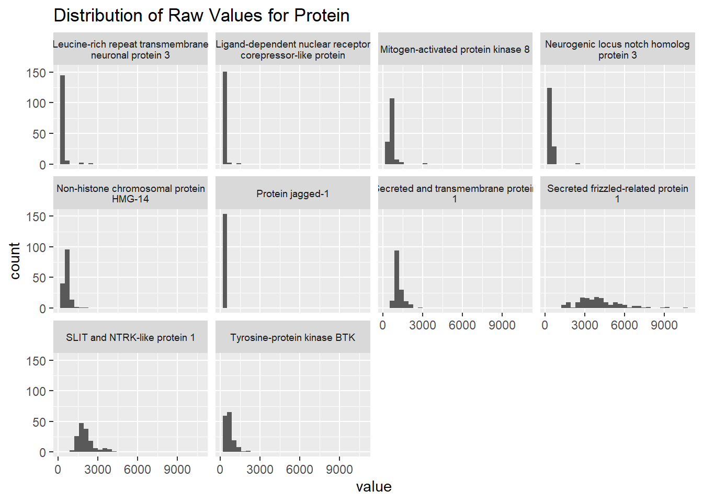
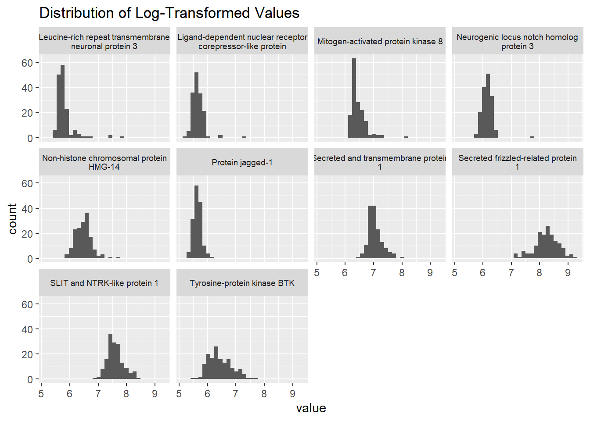
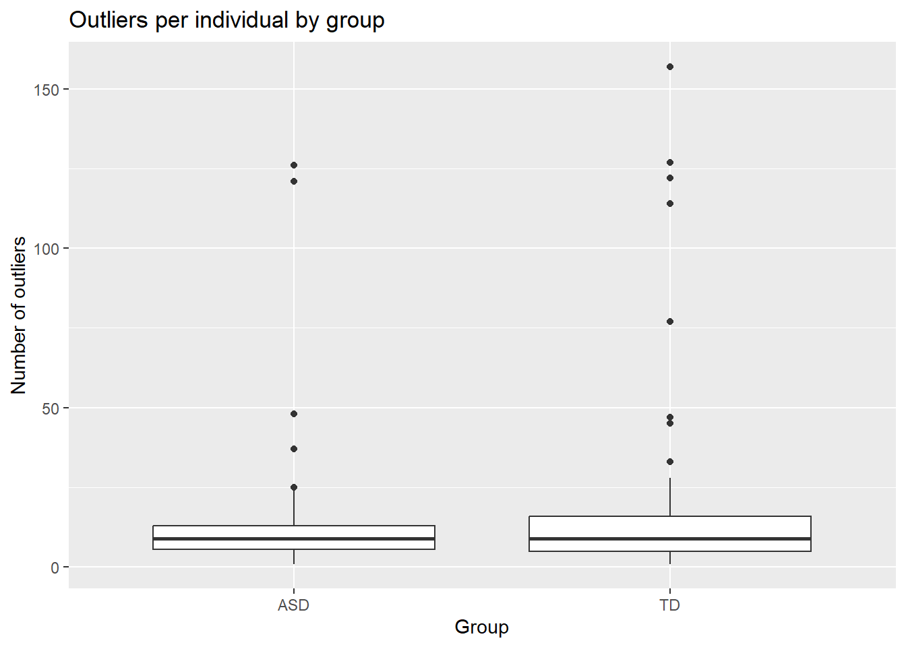

Biomarkers of ASD
Abstract
This report studies potential biological markers in serum samples for identifying autism spectrum disorder (ASD) in boys from the age of 18 months to 8 years old. We investigated this through the use of datasets containing protein measurements from 76 ASD and 78 typically developing (TD) boys. Three analytical methods were employed: correlation analysis, t-tests, and a random forest model. The highest-ranking “core” proteins from each method were compiled into two panels using both “fuzzy” and “hard” intersections. Both panels’ performance were tested using logistic regression, with accuracy results indicating an improvement over prior analyses by about 10%. Findings show that our methods offer a predictive improvement and underscores the importance of methodical preprocessing and analysis in biomarker studies.
Dataset
We are working with two datasets, biomarker-raw.csv and biomarker-clean.RData. Both datasets consist of serum samples of 76 boys who have autism spectrum disorder and 78 boys who are typically developing. Serum samples were obtained via fasting blood draw in a 3.5 ml Serum Separation Tube at times between 8AM-10AM for all subjects. The boys are of 18 months to 8 years of age. Within each subject, 1,317 proteins are measured, and the data helps to identify early biological markers for ASD. The average age for both groups is roughly the same. The mean ASD group age is 5.6 years old with a standard deviation of 1.7 years, and the mean TD group age is 5.7 years old with a standard deviation of 2 years. It is important to note that 41.7% of ASD subjects and 22.4% of TD subjects have seasonal allergies, which may have an effect on the data. For the 76 ASD subjects, the ratios of the ethnicities are as follows: 45.2% White/Caucasians, 35.6% Hispanic/Latinos, 4.1% African American, 2.6% Asian, 12.3% Multiple ethnicities/or Other, and 4.1% not reported. For the 78 TD subjects, the ratios of the ethnicities are as follows: 51.9% White/Caucasians, 7.8% Hispanic/Latinos, 18.2% African American, 3.9% Asian, 18.2% Multiple ethnicities/or Other, and 1.2% not reported.
biomarker-raw.csv contains all raw data that has been collected, with subjects row-wise and group, Autism Diagnostic Observation Schedule (ADOS), and proteins column-wise. biomarker_clean is the cleaned version of biomarker-raw.csv with the raw data log-transformed and z-transformed and outliers trimmed.
Summary of published analysis
Three statistical analysis approaches were used to determine a ‘panel’ of proteins that are most valuable to decide if a subject of the age of 18 months to 8 years of age will be classified as ASD or TD.
First, a correlation approach was used, which collects the correlation values between each protein and the ADOS (Autism Diagnostic Observation Schedule) - which is the measure of ASD symptom severity. To determine the most important relationships, the 10 highest values in magnitude were then selected to be the “pre-panel” of predictive proteins.
Next, they conducted t-tests to compare the mean protein levels between ASD and TD groups. This test evaluates whether the sample means differ significantly, testing the hypothesis that \(\bar\mu_{TD_{i}} - \bar\mu_{ASD_{i}} = 0\) for an arbitrary protein, \(i\), for each group. Proteins with the 10 lowest p-values (indicating significant differences) were deemed the most critical for inclusion in the t-test-based panel.
Lastly, they used a random forest model which not only delivers a model for testing, but can help determine feature (or variable) importance, which is ideal for our situation of selecting the most important proteins. The 10 proteins with the highest importance scores were selected to be the “pre-panel” of predictive proteins.
After performing all three methods, they compared the pre-panels from the 3 methods and found 5 proteins that appear in all 3 panels. Those were labelled as the core proteins. The core proteins were MAPK14, IgD, DERM, EPHB2, suPAR.
Finally, a logistic regression model was applied to this core panel to classify subjects. The core proteins were added as the explanatory variables to help predict if the subjects are in the ASD or TD group. They also wanted to see if there are other proteins that could increase the model’s predictive model, so they added one at a time to see if the AUC value would increase. They ended up adding 4 more proteins to create an “optimal” protein panel. The additional 4 proteins include ROR1, GI24, eIF-4H, ARSB.
The logistic regression model with the 9 optimal proteins had an AUC of 0.853 \(\pm\) 0.066, a sensitivity of 0.833 \(\pm\) 0.118, and a specificity of 0.846 \(\pm\) 0.118.
Findings
Impact of preprocessing and outliers
We used histograms to apply exploratory data analysis on 10 randomly sampled proteins. Viewing their distributions, we can see that all of the raw data is right-skewed. This indicates that there are some individual outliers that contain higher levels of those proteins. The ‘secreted frizzled-related protein’ is the only protein in the random sample that has a bit more of a symmetrical distribution.
After log-transforming the same random sample of proteins and viewing their distributions, the data is much more symmetrical. When working with data that is asymmetrical, applying a log-transformation can normalize the data, improve model fit, and reduce outliers.

From there, we wanted to take a look at which group these individuals with outliers were coming from. To analyze this, we worked with any values that were equal to 3 or -3, since any outliers in the data were trimmed to those values. After tabling the data, we see there is a total of 75 subjects with at least one outlier in the ASD group, and 77 in the TD group. However, TD has a higher amount of total outliers as a group (ASD 1007, TD 1372).
| Group | Total Outliers | Number of Subjects |
|---|---|---|
| ASD | 1007 | 75 |
| TD | 1372 | 77 |
When we visualise outlier count per individual with a box plot, we see there is a denser set of outliers in the TD class compared to the ASD class, which implies that there are more subjects in TD with an abnormally high amount of outliers compared to ASD.

And looking at the subjects with the top 10 most outliers, 7 are from the TD group and 3 are from the ASD group, with the top 2 spots from the TD group. In conclusion, while many subjects have at least 1 outlier, the subjects with a very high amount of outliers mostly belong to the TD group with the top outlier count being from the TD group.
| group | outliers |
|---|---|
| TD | 157 |
| TD | 127 |
| ASD | 126 |
| TD | 122 |
| ASD | 121 |
| TD | 114 |
| TD | 77 |
| ASD | 48 |
| TD | 47 |
| TD | 47 |
Methodlogical variations
To improve on the results of the prior analysis, we split the data into a training and testing set at the beginning, and ran the t-tests and Random Forest using only the training set to find the top predictive proteins. Then, we evaluated the errors on the testing set. This ensures that the logistic regression model is not overfit. After some experimentation, we found that the optimal choice for the number of top predictive proteins from each method was 20, as opposed to the previous 10 from the in-class analysis. From there, we experimented with using a hard or fuzzy interaction between the methods to create our panel of proteins and found that using a fuzzy intersection over a hard intersection allows for other potentially significant proteins to also be included into the panel. Our implementation involved picking the top 10 proteins from each list, combining them, and removing the duplicate proteins to create the fuzzy intersection. The hard intersection was created by taking any proteins the 2 top 20 lists had in common.
The 2 protein panels from the 2 different intersections are as follows, as well as the confusion matrix for the Random Forest model:
| ASD | TD | class.error | |
|---|---|---|---|
| ASD | 37 | 22 | 0.3728814 |
| TD | 17 | 47 | 0.2656250 |
|
|
The metric we are interested in is the accuracy of the logistic regression model. Note that the prior analysis did not partition the data into training and testing sets before running the t-tests and Random Forest. Because of this, the model from the prior was likely overfit, which is why it produced an impressive accuracy score of about 83.9%. After partitioning the data, it performed significantly worse on the testing set. We observe that the accuracy is about 67.7%. This indicates that the prior panel can classify ASD correctly about 67.7% of the time on the testing set.
When using the fuzzy intersection to choose our protein panel, the accuracy increased slightly, with a score of about 77.4%, when compared to the prior panel. This indicates that the fuzzy intersection panel can classify ASD correctly only about 77.4% of the time on the testing set.
When using the hard intersection, the accuracy increased as well, with a score of about 70.9% when compared to the prior panel. This indicates that the hard intersection panel can classify ASD correctly only about 70.9% of the time on the testing set.
|
|
|
Improved classifier
After running a logistic regression on the prior, fuzzy intersection, and hard intersection panels on the training set and testing the models, we improved the accuracy of the prior analysis by about 10% with the hard intersection.
This improvement of accuracy is mainly due to the splitting of the training and testing data before running the t-test and Random Forest to find significant proteins. The prior analysis likely overfit the model due to the lack of any splitting. We also increased the number of top predictive proteins from 10 to 20, which allowed for more proteins to be considered in the panel.
We have also achieved similar accuracy to the prior, at 70.9% (compared to 67.7%) with a fuzzy intersection. The protein panels of the 2 approaches are as follows:
|
|